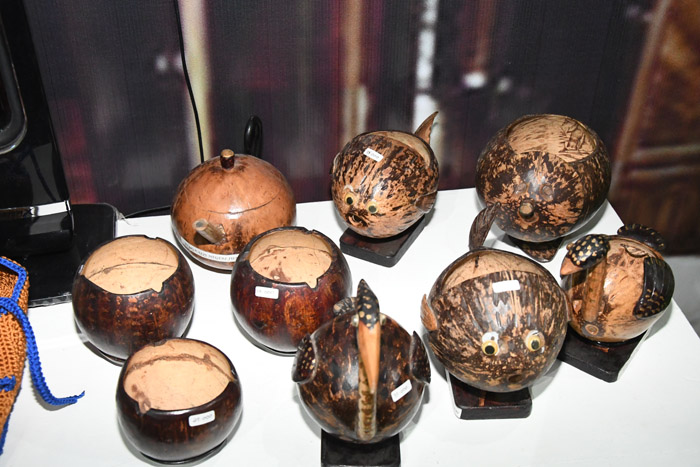

Kerajinan Batok Kelapa
Produk seni kerajinan ramah lingkungan khas pesisir Tarakan.
Mendukung digitalisasi dan efisiensi produk usaha lokal di wilayah pesisir.
Portal ini menyediakan informasi produk unggulan seperti Batik Lulantatibu, Beras Adan, dan Madu Sembakung.

Produk seni kerajinan ramah lingkungan khas pesisir Tarakan.
Produk olahan ikan segar langsung dari nelayan lokal dengan pengemasan modern.
Kain motif khas lokal dengan pewarnaan alami yang berkualitas tinggi.
Fasilitasi pendaftaran sertifikasi halal dan legalitas usaha bagi para pelaku UMKM.
Halo Nama saya Andi Muhammad Arsa , Web ini dikembangkan oleh mahasiswa Teknik Komputer Universitas Borneo Tarakan untuk mendukung digitalisasi UMKM daerah pesisir.